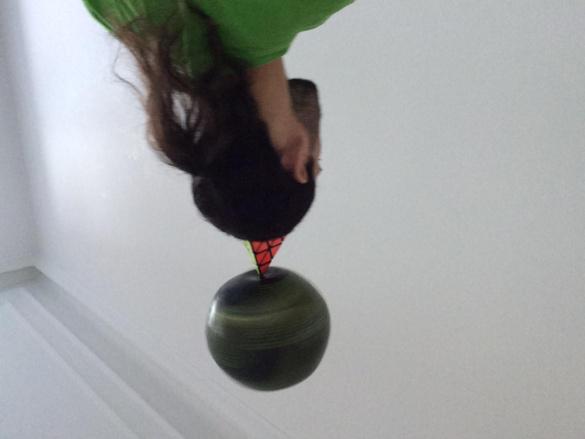

"...jønglering, lige som musik, kombinerer abstrakt mønster og sind-krop koordination på en behagelig måde..."¹
"...de fleste mennesker ville beskrive jønglering som 'kaste og fange ting', imidlertid, en jonglør kunne beskrive handlingen som 'en visuelt kompleks eller en fysisk udfordrende bedrift med en eller flere genstande..."²
Fjern menneskelige grænser, men først skulle vi tabe